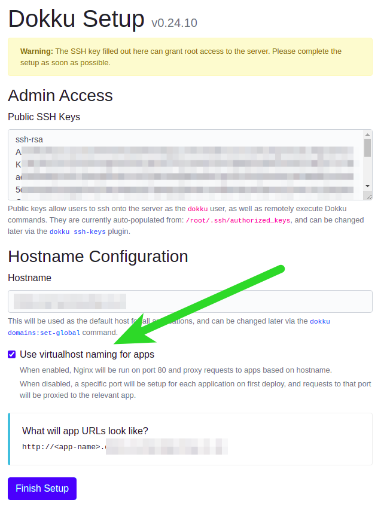

Deployment
Automatic deployment using Dokku and GitHub Actions
Deploy a Dokku server
Requirements:
- Ubuntu 20.04 LTS
- Dokku v0.24.10
- A domain name with a DNS A record pointing to your dokku server (optional)
Dokku Installation
Create dokku swap on small VPS (optional)
For small (cheap) VPS's Dokku will run out of RAM quickly. Create a 5GB swap is one way to mitigate this.
sudo fallocate -l 5g /mnt/5GiB.swap
sudo chmod 600 /mnt/5GiB.swap
sudo mkswap /mnt/5GiB.swap
sudo swapon /mnt/5GiB.swap
echo '/mnt/5GiB.swap swap swap defaults 0 0' | sudo tee -a /etc/fstab
free -mh
On the VPS install Dokku:
wget https://raw.githubusercontent.com/dokku/dokku/v0.24.10/bootstrap.sh;
sudo DOKKU_TAG=v0.24.10 bash bootstrap.sh
# This process may take over 10 minutes
Visit in you web browser to complete install
Visit http://<your-server-ip>, and complete installation.
Be sure to click 'Use virtualhost naming for apps:

After you click 'Finish' you'll be redirected to Dokku documentation- you can close that for now, but do read it.
Dokku configuration
Setup domain (optional)
If dokku was able to resolve the hostname during install then the dokku domain will have already been added check with:
su dokku
dokku domains:report --global
=====> Global domains information
Domains global enabled: true
Domains global vhosts: domain.example.com
If not, check your DNS A record is correctly pointing to your server, then configure dokku manually:
su dokku
dokku domains:add-global <your-domain>
Create database, api, & front-end apps in Dokku
Database
sudo -iu dokku
dokku apps:create salon-booking-guru-database
dokku git:initialize salon-booking-guru-database
dokku git:set salon-booking-guru-database deploy-branch main;
dokku docker-options:add salon-booking-guru-database build --file=/home/dokku/salon-booking-guru-database/Dockerfile;
API
sudo -iu dokku
dokku apps:create salon-booking-guru-api
dokku git:initialize salon-booking-guru-api
dokku git:set salon-booking-guru-api deploy-branch main;
dokku docker-options:add salon-booking-guru-api build --file=/home/dokku/salon-booking-guru-api/Dockerfile;
Front-end
sudo -iu dokku
dokku apps:create salon-booking-guru-front-end
dokku git:initialize salon-booking-guru-front-end
dokku git:set salon-booking-guru-front-end deploy-branch main;
dokku docker-options:add salon-booking-guru-front-end build --file=/home/dokku/salon-booking-guru-front-end/Dockerfile;
Create shared network
This is so the
apianddatabasemay connect to eachother.
dokku network:create sharednetwork
Attach database and api to the sharednetwork, note that the front-end does not need to be connected to the sharednetwork.
dokku network:set salon-booking-guru-database attach-post-create sharednetwork
dokku network:set salon-booking-guru-api attach-post-create sharednetwork
Set database credentials
Database credentials get injected into the apps envrionment upon startup. See 12factor app - config.
dokku config:set salon-booking-guru-api SALON_BOOKING_GURU_DB_HOST=salon-booking-guru-database.web SALON_BOOKING_GURU_DB_PORT=5432 SALON_BOOKING_GURU_DB_PASSWORD="changeme" SALON_BOOKING_GURU_DB_DBNAME="salon_booking_guru" SALON_BOOKING_GURU_DB_USER="postgres"
...
-----> Setting config vars
SALON_BOOKING_GURU_DB_DBNAME: salon_booking_guru
SALON_BOOKING_GURU_DB_HOST: salon-booking-guru-database.web
SALON_BOOKING_GURU_DB_PASSWORD: changeme
SALON_BOOKING_GURU_DB_PORT: 5432
SALON_BOOKING_GURU_DB_USER: postgres
-----> Restarting app salon-booking-guru-api
-----> Releasing salon-booking-guru-api...
...
-----> Shutting down old containers in 60 seconds
=====> Application deployed:
http://salon-booking-guru-api.dokku.karmacomputing.co.uk
http://salon-booking-guru-api.dokku.karmacomputing.co.uk:8085
https://salon-booking-guru-api.dokku.karmacomputing.co.uk
Dockerfile configuration
For dokku v0.24.10 Dockerfile deployment is only recognised when there is a Dockerfile in the root directory of the repository. However this repo has components in subdirectories:
In an upcomping release of Dokku mono repos will be supported.
To workaround this that there is an empty Dockerfile in the root. This forces dokku to treat the apps as docker deployments (Dokku supports multiple deployment types).
Additionally, the git hook(s) need to be altered for each app
Configure Dokku git pre-recieve hook to build correct Dockerfile
This is needed since when docku builds containers the build context is hardcoded to the root of the repo.
Add a pre-recieve hook on the dokku server to fetch the Dockerfile into the repo:
Database
vi salon-booking-guru-database/hooks/pre-receive
#!/usr/bin/env bash
set -e
set -o pipefail
curl https://raw.githubusercontent.com/KarmaComputing/salon-booking-guru/main/database/Dockerfile > /home/dokku/salon-booking-guru-database/Dockerfile
cat | DOKKU_ROOT="/home/dokku" dokku git-hook salon-booking-guru-database
API
vi salon-booking-guru-api/hooks/pre-receive
#!/usr/bin/env bash
set -e
set -o pipefail
curl https://raw.githubusercontent.com/KarmaComputing/salon-booking-guru/main/api/Dockerfile > /home/dokku/salon-booking-guru-api/Dockerfile
cat | DOKKU_ROOT="/home/dokku" dokku git-hook salon-booking-guru-api
Front-end
vi salon-booking-guru-front-end/hooks/pre-receive
#!/usr/bin/env bash
set -e
set -o pipefail
curl https://raw.githubusercontent.com/KarmaComputing/salon-booking-guru/main/front-end/Dockerfile > /home/dokku/salon-booking-guru-front-end/Dockerfile
cat | DOKKU_ROOT="/home/dokku" dokku git-hook salon-booking-guru-front-end
Verify dokku apps with git push
To make sure everything is in order, you can manually push to Dokku from your local
The steps are to:
- Add a git remote for each component (database, api, front-end)
- Perform a git push
- Observe the containers running
Git add remotes
On your local machine.
DOKKU_IP=<dokku-ip> # change to your ip address
git remote add dokku-database dokku@$DOKKU_IP:salon-booking-guru-database
git remote add dokku-api dokku@$DOKKU_IP:salon-booking-guru-api
git remote add dokku-front-end dokku@$DOKKU_IP:salon-booking-guru-front-end
You can verify remotes with
git remote -v show
Deploy initial apps
From your local machine, star the deployment of the database. api and front-end apps.
Deploy database
You will see dokku deploy the database
git push dokku-database main
Enumerating objects: 594, done.
-----> Cleaning up...
-----> Building salon-booking-guru-database from Dockerfile
remote: dos2unix: converting file Dockerfile to Unix format...
remote: build context to Docker daemon 1.77MB
Step 1/6 : FROM postgres:13.3-alpine
...
=====> Application deployed:
http://salon-booking-guru-database.dokku.karmacomputing.co.uk
http://salon-booking-guru-database.dokku.karmacomputing.co.uk:5432
To <ip>:salon-booking-guru-database
* [new branch] main -> main
Deploy API
git push dokku-api
Enumerating objects: 594, done.
Counting objects: 100% (594/594), done.
...
-----> Renaming containers
Renaming container (04b1f4740169) youthful_cori to salon-booking-guru-api.web.1
-----> Checking for postdeploy task
No postdeploy task found, skipping
=====> Application deployed:
http://salon-booking-guru-api.dokku.karmacomputing.co.uk
http://salon-booking-guru-api.dokku.karmacomputing.co.uk:8085
Deploy front-end
Note front-end build may take over 5 minutes to build
git push dokku-front-end
...
-----> Checking for postdeploy task
No postdeploy task found, skipping
=====> Application deployed:
http://salon-booking-guru-front-end.dokku.karmacomputing.co.uk
Verify front-end app loading:
http://salon-booking-guru-front-end.dokku.karmacomputing.co.uk/
Automatic Let's Encrypt TLS Certificate
Install Let's Encrypt plugin
# as root on dokku
sudo dokku plugin:install https://github.com/dokku/dokku-letsencrypt.git
Setup automatic certs for api and frontend
Must use a valid email address
sudo -iu dokku
dokku config:set --global DOKKU_LETSENCRYPT_EMAIL=your@email.tld
Certificate generation
# API
dokku letsencrypt:enable salon-booking-guru-front-end
# Front-end
dokku proxy:ports-add salon-booking-guru-api http:80:8085
dokku letsencrypt:enable salon-booking-guru-api
dokku proxy:ports-add salon-booking-guru-api https:443:8085
Troubleshooting
Dokku apps command not found
Check ~/.ssh/authorized keys / root to ensure the ssh command includes
command="`cat /home/dokku/.sshcommand` $SSH_ORIGINAL_COMMAND" ssh-rsa <the key>
How do I know the database is connected OK
See healthcheck endpoint.
Tail the logs of the app, and observe Connection to the database established.
dokku@dokku:~$ dokku logs -t salon-booking-guru-api
2021-08-01T20:48:32.183932807Z app[web.1]: 2021/08/01 20:48:32 Listening on :8085
2021-08-01T20:48:32.521738711Z app[web.1]: 2021/08/01 20:48:32 Connection to the database established
How to force a rebuild/reload of an app
Example rebuilding the database and api see Dokku rebuilding apps
dokku ps:rebuild salon-booking-guru-database
dokku ps:rebuild salon-booking-guru-api
Access denied when pushing from local
It's possible your ssh key is not configued with dokku. Either use ssk-copy-id or:
cat ~/.ssh/id_rsa.pub | ssh root@<your-vps-ip-address> dokku ssh-keys:add mylocal
Docker options not set / building wrong Dockerfile
Check the docker-options.
dokku docker-options:report salon-booking-guru-front-endIf you need to reset them:
- take a copy of all existing settings
dokku docker-options:report salon-booking-guru-front-end- Clear the options
dokku docker-options:clear- Add the settings back you want for each stage e.g.
dokku docker-options:add salon-booking-guru-front-end deploy --restart=on-failure:10
If you get the following error: remote: unable to prepare context: unable to evaluate symlinks in Dockerfile path: lstat /home/dokku/salon-booking-guru/api: no such file or directory. This means that the Dockerfile is not already on the Dokku servers repository, make sure that its already there and check the pre-recieve hook so that it has the correct URL to the Dockerfile. It must start with raw.githubusercontent.com.
Github Actions setup
Credentials
The Github Dokku action needs to be able to ssh into the Dokku server.
On the dokku server, generate a keypaid for Github to use;
su dokku
ssh-keygen # Press enter, generate key without passphrase
Allow the key to be used by Github
cat ~/.ssh/id_rsa.pub >> ~/.ssh/authorized_keys
Copy the private key to Gituub secrets e.g. https://github.com/<org>/<repo>/settings/secrets/actions
as SSH_PRIVATE_KEY.
cat ~/.ssh/id_rsa # Copy into GitHub secrets as SSH_PRIVATE_KEY
Also set DOKKU_HOST to the ip address or hostname of your dokku server.
Hardening
Disable Password based authentication
- Verify your ssh access working with key based access (
ssh root@<your-ip>) # login without a password - Disable ssh password based authentication
- Open
/etc/ssh/sshd_config - Change the line
#PasswordAuthentication yestoPasswordAuthentication no